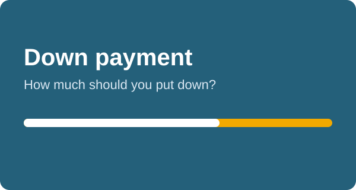

How Much Down Payment Should You Put on a Car?

A bigger down payment is the simplest way to lower your car loan cost. It reduces what you borrow, and every dollar you do not borrow is a dollar that never earns interest for the lender.
The common guideline
Many buyers aim for about 20% down on a new car and about 10% on a used one. New cars lose value fastest, so a larger down payment helps you avoid owing more than the car is worth.
What the numbers look like
At 6.5% APR for 60 months, borrowing $30,000 costs about $587 a month and about $5,210 in interest. Borrowing $24,000 costs about $470 a month and about $4,170 in interest. Putting $6,000 more down saves about $117 a month and about $1,040 in interest.
Do not drain your savings
Keep an emergency fund of at least a few months of expenses. A smaller down payment and a safe cushion is better than a large down payment and no savings.
Ways to raise your down payment
- Use your trade-in value.
- Wait and save a few more months.
- Choose a slightly cheaper car.
- Check for manufacturer rebates that count as a down payment.
Try different down payment amounts in the calculator to see your payment and interest change instantly.